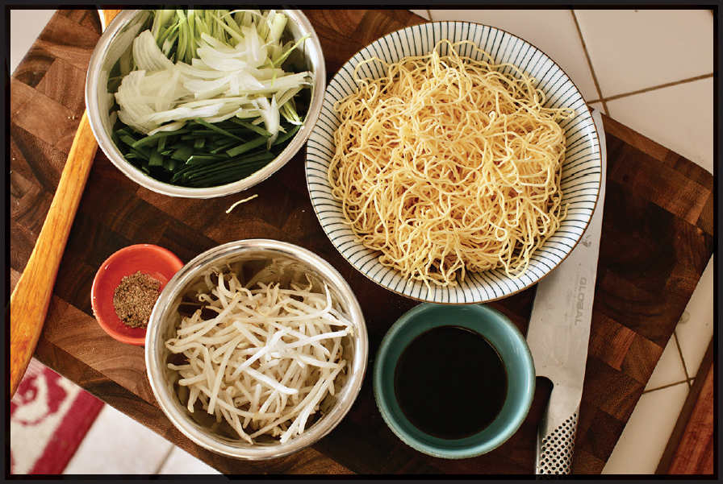

The Many Faces of Chow Mein
Chinese noodle nomenclature in the United States can get a bit confusing. Where I grew up in New York and Boston, “lo mein” referred to thick egg noodles stir-fried with sauce. It’s a slippery dish characterized by the bouncy spring of the noodle.

Chow mein, which literally translates as “stir-fried noodles,” on the other hand, could refer to a few different dishes. When I was a kid, chow mein were those crunchy deep-fried noodle strips that came out of a cardboard Chun King can and were used (along with canned mandarin oranges) to top “Asian” salads or to serve under a ladle of brown soy-sauce-based gravy to drown alongside mystery meat and celery at the school cafeteria. The Chun King brand was founded by Jeno Paulucci, the convenience food magnate whose inventions include frozen pizzas and pizza rolls. It was absorbed by La Choy in 1995, which still produces the same canned fried noodles.
This version of chow mein no doubt derived from so-called Hong Kong–style panfried noodles, also known as liang miàn huang, or “two yellow face”: a sort of noodle cake made of thin egg noodles fried until golden and crisp on both sides and served with a saucy pork and vegetable stir-fry on top.
Confusingly, “Hong Kong–style” chow mein is neither stir-fried nor originally from Hong Kong. According to Hong Kong–based Michelin writer Man Wai Leung, the dish originates from Shanghai and Suzhou on China’s central coast, making its way to Hong Kong in the 1950s. It was immediately adopted and adapted by Cantonese and Teocheow communities, making its way onto the menus of Luk Yu and Lin Heung, two still-operating dim sum halls and tea houses that catered to Shanghai business tycoons at the time.
Depending on who you ask, “Hong Kong–style” chow mein could also refer to chi you wang chow mein, or “superior soy sauce fried noodles,” a Cantonese preparation derived from Suzhou liang miàn huang that starts life in a similar manner—thin egg noodles boiled and then panfried in a cake—but before they’re fully crisped, the cake is broken up and stir-fried with scallions, bean sprouts, and soy sauce, resulting in a dish that combines some of the tender, chewy elements of stir-fried lo-mein-style noodles, with bits of crispy noodle in each bite.
And if that’s not confusing enough, when I moved out to the West Coast, I was surprised once again to discover that here “chow mein” refers to saucy stir-fried noodles similar to what we’d call “lo mein” on the East Coast, while “lo mein” would refer only to the noodles themselves. (In many respects, the West Coast nomenclature system is truer to actual Chinese definitions.) If you live in Minnesota, your chow mein may come topped with subgum, a saucy mix of meat and vegetables similar to what San Franciscans and New Yorkers in the 1950s would have called chop suey.
And if you’re from Massachusetts’ North Shore? Oh boy. The “chow mein sandwich,” originating from the town of Fall River in the 1930s, consists of a hamburger bun overflowing with crispy fried noodles and brown gravy. That sandwich itself is a descendant of the Salem chop suey sandwich, a messy pile of bean sprouts and meat served in a burger bun that Atlas Obscura claims has existed since 1875.*
Is this all confusing to you? Don’t worry; you don’t need to unravel the tangled web of noodles that is chow mein’s history to enjoy it in its various forms.
*Considering the hamburger bun as we know it was unveiled at the 1916 St. Louis World’s Fair by future White Castle founder Walter Anderson, I would take this claim with a grain of salt . . . er, dash of soy sauce.